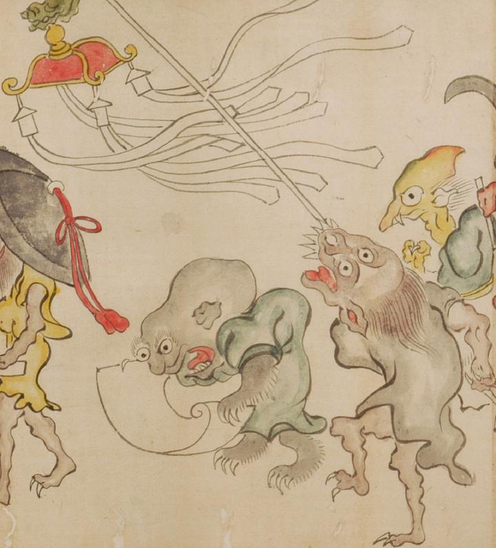

← 图鉴索引

竜頭の天蓋をかかげる化物。大きく開いた口からは鋭い牙が見える。
出典：親書誌：U426_nichibunken_0054：百鬼夜行絵巻；ヒャッキヤギョウエマキ／日付：2006／資源識別子：U426_nichibunken_0054_0007_0011
Copyright (c)2010- International Research Center for Japanese Studies, Kyoto, Japan. All rights reserved.